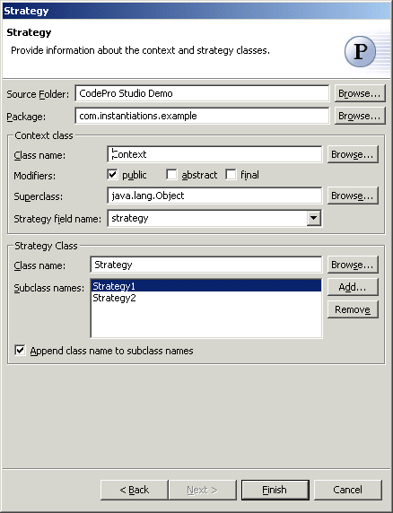

Strategy Pattern
Also known as: PolicyThe  Strategy Pattern defines a family of algorithms, encapsulates each one, and makes them interchangeable,
thus letting the algorithm vary independently from clients that use it.
Strategy Pattern defines a family of algorithms, encapsulates each one, and makes them interchangeable,
thus letting the algorithm vary independently from clients that use it.
Wizard
Applicability
Additional Resources
Wizard
| Option | Description | Default |
| Source folder | Enter a source folder for the new classes. Either type a valid source folder path or click Browse to select a source folder via a dialog. | The source folder of the element that was selected when the wizard was started. |
| Package | Enter a package to contain the new classes. Either type a valid package name or click Browse to select a package via a dialog. | The package of the element that was selected when the wizard was started. |
| Context class name | Type a name for the new context class. | <Context> |
| Modifiers | Select one or more access modifiers for the new
class.
|
public |
| Superclass | Type or click Browse to select a superclass for the abstraction class. | <java.lang.Object> |
| Strategy field name | Type a name for the field that holds the strategy. | <strategy> |
| Strategy class name | Type or click Browse to select the class to be used as the strategy class | The type or the primary type of the compilation unit that was selected when the wizard was started |
| Subclass names | Click Add to enter the names of the concrete subclasses of the strategy class representing strategies. | <blank> |
| Append class name to subclass names | Determines whether to append the strategy class name to each subclass name when creating the subclasses. | <true> |
Applicability
Use the Strategy pattern when- many related classes differ only in their behavior..
- you need different variants of an algorithm.
- an algorithm uses data that clients shouldn't know about.
- a class defines many behaviors, and these appear as multiple conditional statements in its operations.
Additional Resources
http://c2.com/cgi/wiki?StrategyPatternhttp://www.wikipedia.org/wiki/Strategy_pattern